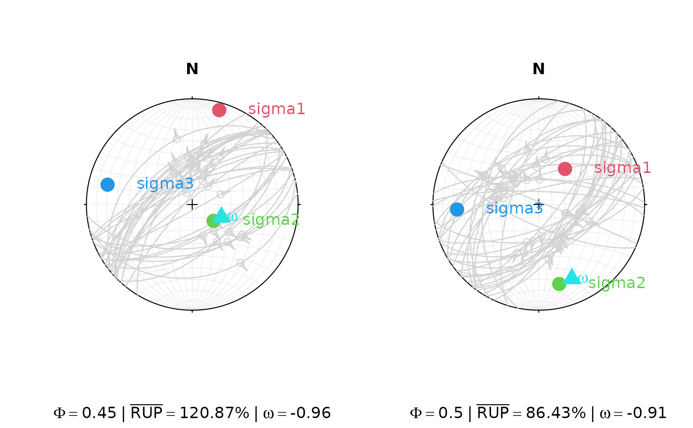

9D Direct Inversion for Fault Slip Including Vorticity
Source:R/stress_inversion_hansen.R
slip_inversion_hansen.RdDirect inversion of stress, strain or strain rate including vorticity using 9D parameter space using the method by Hansen (2013). It can be applied regardless whether the dynamic or the kinematic hypothesis is adopted; it can handle datasets representing two to seven degrees of freedom; and it is not dependent on the correct assessment of slip sense.
References
Hansen, J. A. (2013). Direct inversion of stress, strain or strain rate including vorticity: A linear method of homogenous fault-slip data inversion independent of adopted hypothesis. Journal of Structural Geology, 51, 3–13. https://doi.org/10.1016/j.jsg.2013.03.014
See also
Other stress-inversion:
Fault_PT(),
slip_inversion(),
slip_inversion_angelier(),
slip_inversion_michael(),
slip_inversion_simple()
Examples
par(mfrow = c(1, 2))
invisible(lapply(angelier1990, function(x){
res <- slip_inversion_hansen(x, TRUE)
phi_val <- round(res$stress_shape$phi, 2)
rup_val <- round(res$misfit$rup, 2)
w_val <- round(res$vorticity_mag, 2)
plot(x, col = 'lightgrey')
points(res$principal_axes, col = 2:4, pch = 16, cex = 2)
text(res$principal_axes, labels = rownames(res$principal_axes), col = 2:4, adj = -.5)
points(res$vorticity_axis, col = 5, pch = 17, cex = 2)
text(res$vorticity_axis, labels = bquote(omega), col = 5, adj = -.5)
title(sub = bquote(Phi == .(phi_val) ~ "|" ~ bar("RUP") == .(rup_val) * '%'~"|"~omega == .(w_val)))
}))
